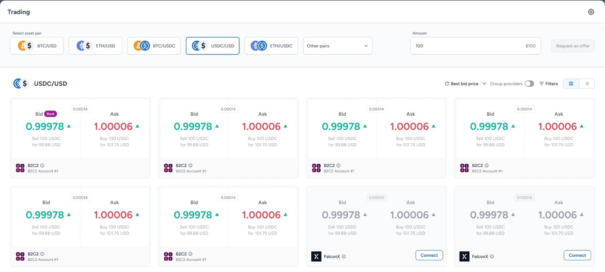
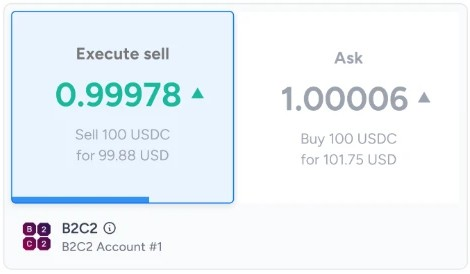
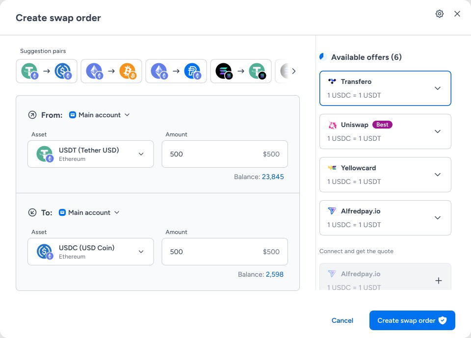
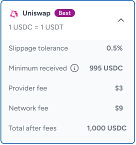
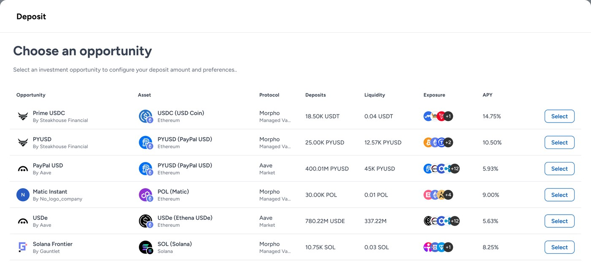
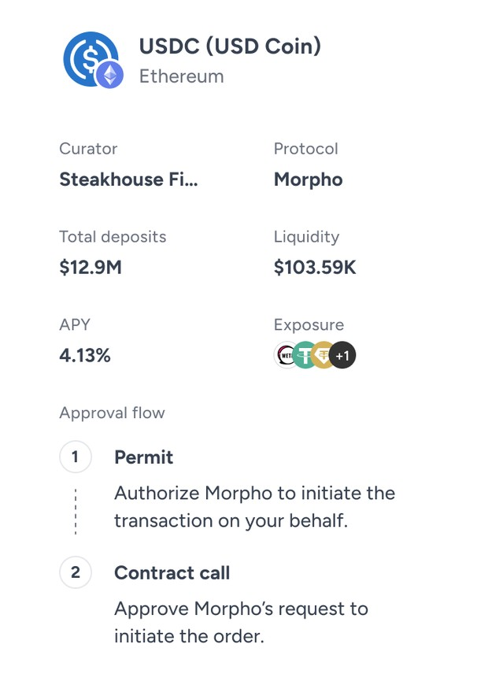

Portfolio
Product Designer & Product Builder
Selected work




Liquidity Market
Best execution for institutional-size trades: live quotes from every provider, locked and executed in two clicks.
Read case study →

Swap
Native asset swaps inside the secure console: best-rate routing, every quote visible, and policy-based approvals.
Read case study →

Earn
Yield on idle stablecoins through Aave and curated Morpho vaults, inside the console's policies and approvals.
Read case study →About
Designer who shipsI'm a hybrid product designer and builder working in FinTech, Web3, banking and cybersecurity.
I own the full product lifecycle, for complex B2B enterprise platforms and high-scale consumer products alike: discovery, UX architecture, design systems, and hands-on front-end development through production merge requests.
AI coding and design tools are part of how I work every day. Cursor, Claude Code and LLMs let me research faster, prototype in real code, and get from decision to shipped UI in fewer steps.
- Product Designer & Builder · Fireblocks2025 – nowEnd-to-end design and front-end for the Financial Apps division: Earn, Staking, On/Off Ramp, Trading and Swap.
- Product Designer · Bank Hapoalim2022 – 2025Led UX for flagship credit-card and loan products in DCOE. Reduced drop-offs significantly, adding millions of shekels in revenue.
- Co-Founder & UX Lead · Colligo, Germany2021 – 2022Co-founded a SaaS commission-management platform and delivered the interactive MVP that secured early traction and investor backing.
- Product Designer · Freelance2021 – 2022UX/UI strategy and web products for Dig Security, Pentera and Outbrain, supporting funding rounds and IPOs.
- Junior UX Designer · CAL2021 – 2022Redesigned the mobile app and self-service journeys, raising digital adoption and card issuance.